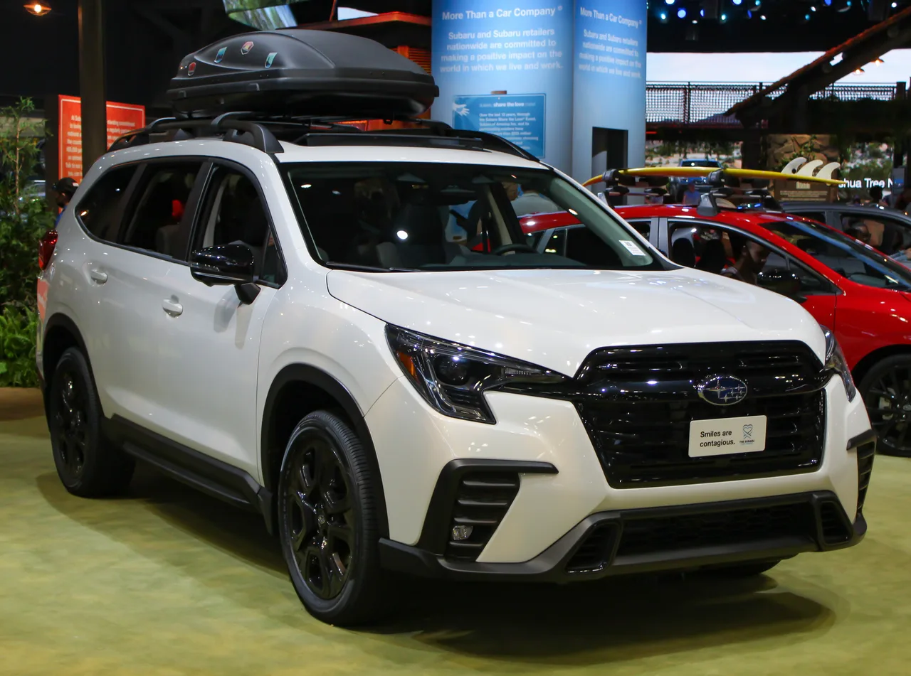
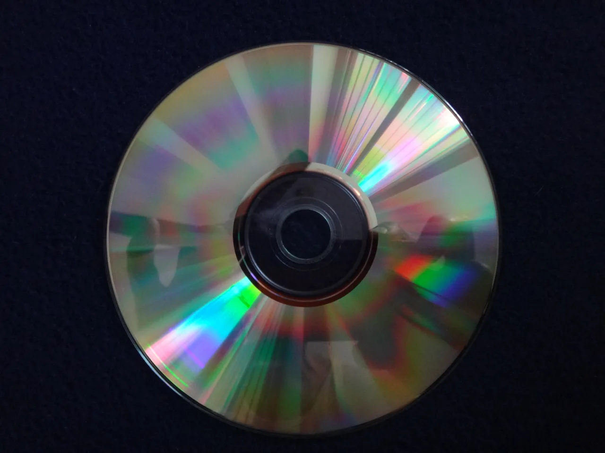

▲ 스바루 WRX. 2026년형 기준 미국에서 CD플레이어를 옵션으로 제공하는 단 두 개 차종 중 하나다
스트리밍 서비스와 블루투스가 자동차 인포테인먼트의 기본값이 된 2026년, 미국에서 CD플레이어를 옵션으로 살 수 있는 신차는 단 두 종류뿐입니다. 2026년형 스바루 WRX와 어센트가 그 주인공입니다. 다른 모든 완성차 브랜드가 이미 CD플레이어를 라인업에서 완전히 지운 상황에서, 유독 스바루만 이 구식 기능을 붙들고 있습니다.
1. 449.95달러, 숨겨진 단일 디스크 플레이어
WRX 기준으로 CD플레이어 옵션 가격은 정확히 449.95달러입니다. 어센트 역시 비슷한 수준의 추가 비용이 붙습니다. 이 옵션을 선택하면 센터콘솔 안에 CD플레이어가 내장되는데, 평소에는 겉으로 드러나지 않고 숨겨져 있다가 필요할 때만 꺼내 쓰는 구조입니다. 다만 한 번에 디스크 한 장만 재생할 수 있어, 과거 6장·10장 체인저가 흔했던 시절과 비교하면 극히 축소된 형태입니다.

▲ 스바루 어센트. WRX와 함께 미국에서 CD플레이어 옵션을 유지하는 마지막 두 차종 중 하나다
2. 왜 아직 스바루만 남았을까
정확한 이유는 스바루 측이 공식적으로 밝히지 않았습니다. 다만 스바루가 오랫동안 실용성과 신뢰성을 중시하는 브랜드 이미지를 지켜온 만큼, CD 소장자가 여전히 존재하는 코어 팬층을 배려한 선택일 가능성이 있습니다. 흥미로운 점은 같은 스바루 라인업 안에서도 일관성이 없다는 것입니다. 스바루 아웃백은 작년 모델까지 CD플레이어를 제공했지만, 신형으로 넘어가면서 이 옵션을 없앴습니다. 렉서스 IS도 마찬가지입니다. 2025년형까지는 CD플레이어를 제공했지만, 신세대 모델로 넘어가면서 이 옵션이 사라졌습니다. 결국 WRX와 어센트에만 우연히, 혹은 특정 세대 설계가 남아 있는 형태로 살아남은 셈입니다.

▲ CD플레이어는 스트리밍이 대세가 된 지금도 일부 소비자에게는 여전히 의미 있는 물리 매체다
3. 정리 — 사라져가는 기능의 마지막 흔적
CD플레이어가 신차 옵션 리스트에서 완전히 사라지는 것은 이제 시간문제로 보입니다. 아웃백처럼 세대 교체와 함께 조용히 빠지는 방식이 대세가 될 가능성이 높습니다. WRX와 어센트가 앞으로 몇 년이나 이 옵션을 유지할지는 알 수 없지만, 적어도 지금은 물리 매체에 대한 애착을 가진 소비자에게 남은 마지막 선택지입니다. CD 컬렉션을 여전히 자동차에서 듣고 싶은 사람이라면, 지금이 이 옵션을 경험할 수 있는 마지막 기회일 수도 있습니다.

▲ 스바루 크로스트렉. WRX·어센트와 달리 CD플레이어 옵션은 없지만, 실용성을 중시하는 스바루 특유의 브랜드 색깔은 라인업 전반에서 이어진다